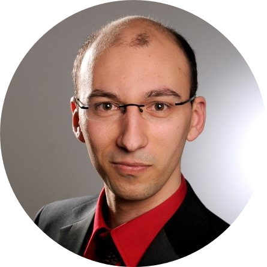

|  |
Marco RußigGründer und CEO von EinsatzDOKU
Beruflich bin ich als Staatlich geprüfter Techniker für Maschinenbau
in einem Unternehmen welches Großküchen und Kaffeeterien Baut
tätig.
Diese ist auch der Grund wie es zu der Entwicklung von EinsatDOKU
gekommen ist. |
| Zeitraum | Tätigkeit |
|---|---|
| 2001 | Realschulabschluss |
| 2001 - 2005 | Ausbildung Zerspanungsmechaniker |
| 2005 - 2009 | Bundeswehr |
| 2009 - 2010 | CNC-Fräser |
| 2010 - 2012 | CAM-Programmierer |
| 2011 - 2013 | Studium Techniker Maschinenbau |
| 2014 - 2019 | Konstrukteur |
| 2019 - 2022 | Abteilungsleiter Service |
| 2022 - heute | Standardisierung und iLogic Programmierung |
| Autodesk Inventor | 🟢🟢🟢⚪⚪ |
| SolidWorks | 🟢🟢🟢⚪⚪ |